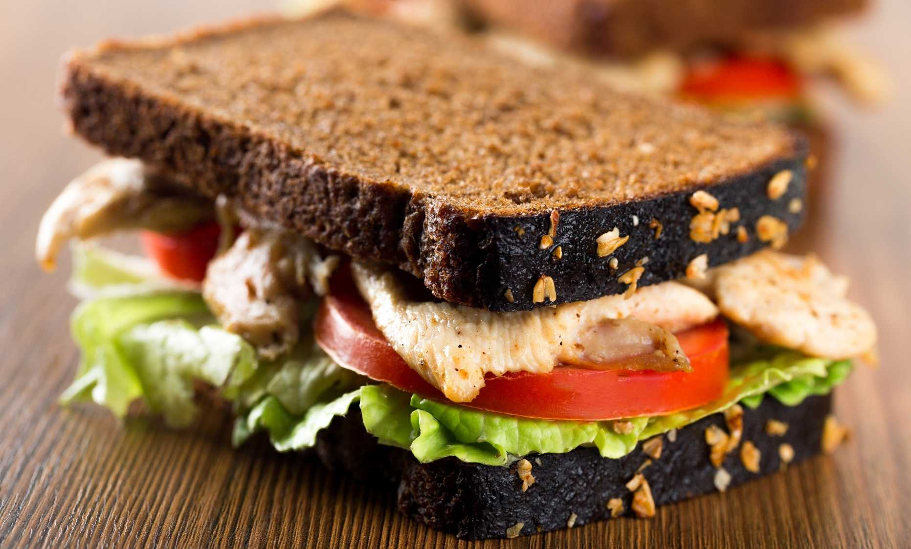

Blog de recetas

Sandwich de pechuga de pollo con pesto y queso
Ingredientes:
- 4 pechugas de pollo, deshuesadas y sin piel
- 8 rebanadas de nuestro Pan de Centeno La Farina
- 100g de queso feta
- 1 tomate, en rodajas finas
- 4 hojas de lechuga
- 2 cucharadas de pesto
- 1 chorro de aceite de oliva
- Sal y pimienta a gusto
Procedimiento:
- Marinar las pechugas de pollo con sal, pimienta y una pizca de aceite de oliva
- Cocinar las pechugas en una sartén hasta que estén doradas y completamente cocidas. Luego, déjalas reposar unos minutos.
- Tostar ligeramente las rebanadas de pan de centeno.
- Unta una fina capa de pesto en una de las rebanadas de pan tostado.
- Coloca las pechugas de pollo sobre el pesto.
- Agrega las fetas de queso.
- Coloca rodajas de tomate y hojas de lechuga.
- Salpimienta al gusto.
- Acompaña con una ensalada verde fresca o papas fritas.